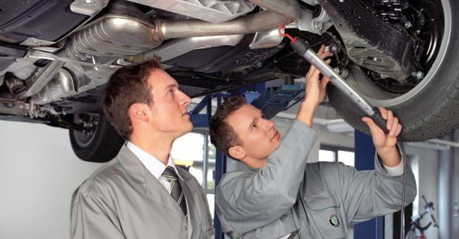
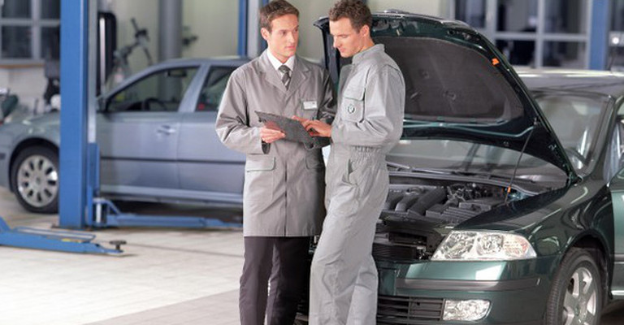

Każdy pojazd, który uczestniczy w ruchu drogowym musi przejść okresowe badania techniczne. W tym artykule opowiemy na czym polega takie badanie i jak często należy go wykonać. W sytuacji zakupu nowego samochodu pierwszy przegląd auta powinien nastąpić po 3 latach od daty pierwszej rejestracji. Drugi przegląd wykonujemy po dwóch latach, natomiast każdy kolejny już co roku. W przypadku taksówek, samochodów używanych w ośrodkach nauki jazdy oraz pojazdów z...

Zimowa pora roku to czas, do którego należy odpowiednio przygotować samochód. Pracownicy warsztatów samochodowych, czy stacji kontroli pojazdów mają w tym czasie pełne ręce roboty. Niskie temperatury, opady śniegu i deszczu wpływają znacząco na stan jezdni. Pokryta lodem, śliska nawierzchnia, to jedna z najczęstszych przyczyn wpadania samochodu w poślizg. To jak uda nam się wybrnąć z tej stresującej sytuacji, nie zależy jedynie od umiejętności, opanowania czy...
Samochód zasilany gazem to nie tylko większa oszczędność, ale i więcej obowiązków. Taki pojazd musi odbywać regularne badania techniczne, nie tylko z powodu obligatoryjnego corocznego badania w stacji kontroli pojazdów , a głównie z powodów bezpieczeństwa.Jak często kontrolować instalację LPG?Producenci określają tzw. interwały przeglądów okresowych. Występują one w odległościach ok. 10 tysięcy kilometrów dla aut obsługiwanych przez polską centralę sterującą,...